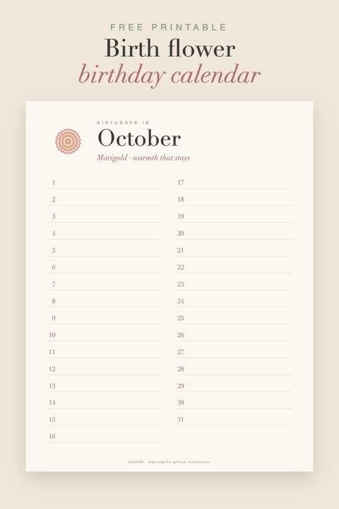

Free Printable Birthday Calendar with Birth Flowers (Perpetual)
2026-10-02
Written by the team behind Aquum, a small birth flower gift shop. How we make money.

A birthday calendar you only have to make once. Each month gets its own page with its birth flower and what it means, and a line for every day from the 1st to the 31st. There's no year on it, so it works this year, next year and every year after.
Download the free birth flower birthday calendar (PDF)
Twelve letter-size pages (8.5 × 11 in), one per month.
How to use it
- Print all twelve pages on regular paper or light cardstock.
- Write in every birthday you want to remember: family, friends, coworkers, your kids' classmates.
- Keep it together: punch holes and use a binder ring, clip it to a board, or hang it by the door and flip the page each month.
Because each page shows the month's flower, you'll always know whose birth flower is coming up. It makes choosing a card or a small gift much easier.
Ideas
- A family heirloom: add birthdays as the family grows. It becomes a record of everyone.
- For the office or a classroom: one calendar for the whole team, so nobody's birthday gets missed.
- A gift for grandparents: fill in every grandchild's birthday before you give it.
- Plan ahead: at the start of each month, check the page and pick up cards. Our free birthday cards use the same flowers.
Not sure which flower belongs to which month? See birth flowers by month, or try the birth flower finder.
This calendar is for personal use: print as many as you like. Please don't sell it or share the file on other sites; link to this page instead.
More free printables: all our birth flower printables in one place.
Mark each birthday with a free birth flower sticker.